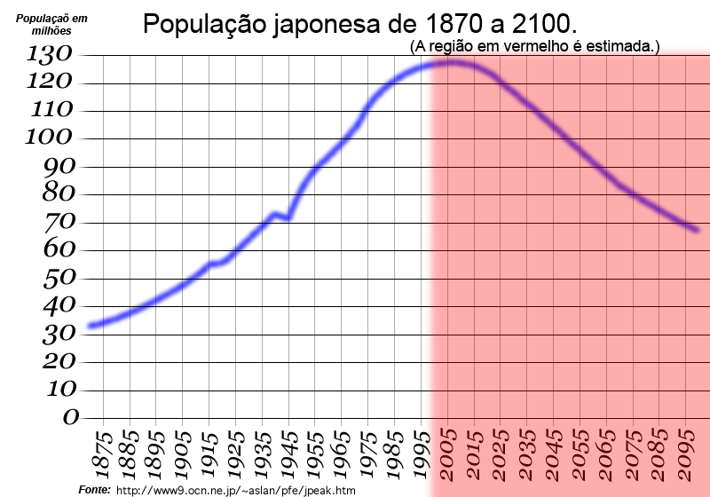
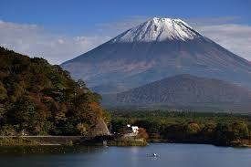

Geografia
O Japão é um arquipélago localizado no leste da Ásia, formado por quatro ilhas principais: Honshu, Hokkaido, Kyushu e Shikoku. O clima varia do subtropical ao temperado, com invernos frios e verões úmidos.

História
O Japão possui uma história milenar marcada pela convivência entre tradição e inovação. Durante séculos, o país foi governado por clãs e samurais sob o sistema feudal. No século XIX, com a Restauração Meiji, o Japão abriu-se ao mundo e passou por intensa modernização.
No século XX, participou da Segunda Guerra Mundial, sendo profundamente marcado pelas bombas atômicas em Hiroshima e Nagasaki. Após a guerra, tornou-se uma das maiores potências econômicas do mundo, destacando-se pela tecnologia e cultura pop.
Hoje, o Japão é reconhecido por equilibrar suas tradições milenares, como o budismo, o xintoísmo e as artes marciais, com inovações em tecnologia e ciência.
Português
Reportagem: “Japão, a terra do sol nascente, encanta o mundo com sua harmonia entre tradição e modernidade. Dos templos antigos de Kyoto aos arranha-céus iluminados de Tóquio, o país mostra como o passado e o futuro podem coexistir em perfeita sintonia.”
Matemática
A população do Japão é de aproximadamente 125 milhões de habitantes, mas vem diminuindo nos últimos anos.
O PIB japonês é um dos maiores do mundo, sendo fortemente impulsionado pela indústria tecnológica e automobilística.
Ciências
O Japão é conhecido por sua biodiversidade única e por estar localizado no “Círculo de Fogo do Pacífico”, região de intensa atividade sísmica e vulcânica.
Além disso, o país possui diversos ecossistemas, desde florestas temperadas até ilhas subtropicais, com espécies como o macaco-da-neve e o tsuru (ave símbolo da longevidade).
